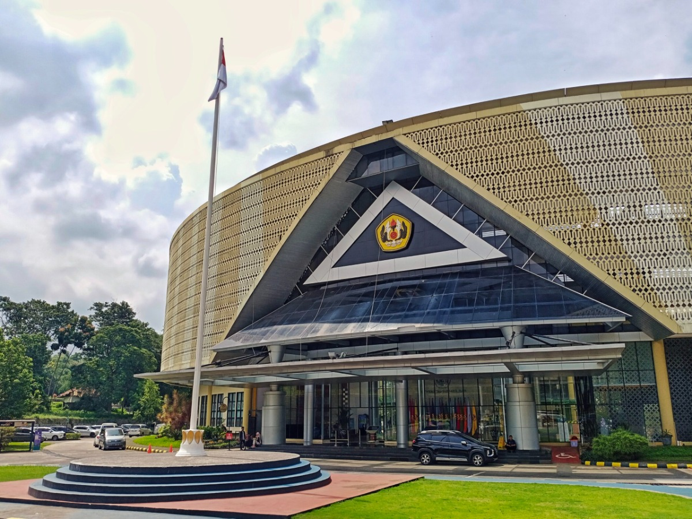

Universitas Padjadjaran (Unpad) is one of Indonesia's top public universities, established on September 11, 1957. The name "Padjadjaran" is derived from the name of the Sunda Kingdom. On January 16, 2014, Unpad received an institutional accreditation certificate with an "A" rating from the National Accreditation Board for Higher Education. Furthermore, Unpad was recorded as the state university with the highest number of applicants in Indonesia during the National Selection for State Universities (SNMPTN) and the Joint Selection for State Universities (SBMPTN) in 2012, 2013, 2014, and 2015.